4. GUI#
Proxmox VE는 간단합니다. 별도의 관리 도구를 설치할 필요가 없으며 웹 브라우저를 통해 모든 작업을 수행할 수 있습니다(최신 Firefox 또는 Google Chrome 권장). 내장된 HTML5 콘솔은 게스트 콘솔에 액세스하는 데 사용됩니다. 대안으로 SPICE를 사용할 수도 있습니다.
Proxmox 클러스터 파일 시스템(pmxcfs)을 사용하기 때문에 어느 노드에나 연결하여 전체 클러스터를 관리할 수 있습니다. 각 노드는 전체 클러스터를 관리할 수 있으며, 전용 관리자 노드가 필요하지 않습니다.
모든 최신 브라우저에서 웹 기반 관리 인터페이스를 사용할 수 있습니다. 모바일 장치에서 연결 중임을 Proxmox VE가 감지하면 더 간단한 터치 기반 사용자 인터페이스로 리디렉션됩니다.
웹 인터페이스는 https://proxmox-ip:8006(기본 로그인 계정은 root이며, 비밀번호는 설치 과정에서 설정)를 통해 접속할 수 있습니다.
4.1. 특징#
Proxmox VE 클러스터의 원활한 통합 및 관리
리소스의 동적 업데이트를 위한 AJAX 기술
SSL 암호화(https)를 통해 모든 가상 머신 및 컨테이너에 대한 보안 액세스 보장
수백, 수천 개의 가상 머신을 처리할 수 있는 빠른 검색 기반 인터페이스
보안 HTML5 콘솔 또는 SPICE
모든 객체(VM, 스토리지, 노드 등)에 대한 역할 기반 권한 관리
다중 인증 소스 지원(예: 로컬, MS ADS, LDAP, …)
2단계 인증(OATH, Yubikey)
ExtJS 7.x JavaScript 프레임워크 기반
4.2. 로그인#
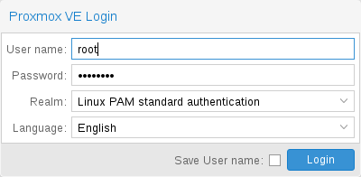
서버에 연결하면 먼저 로그인 창이 표시됩니다. Proxmox VE는 다양한 인증 백엔드(
참고
하단의 확인란을 선택하면 클라이언트 측에서 사용자 이름을 저장할 수 있습니다.
이렇게 하면 다음에 로그인할 때 입력하는 시간을 절약할 수 있습니다.
4.3. GUI 개요#
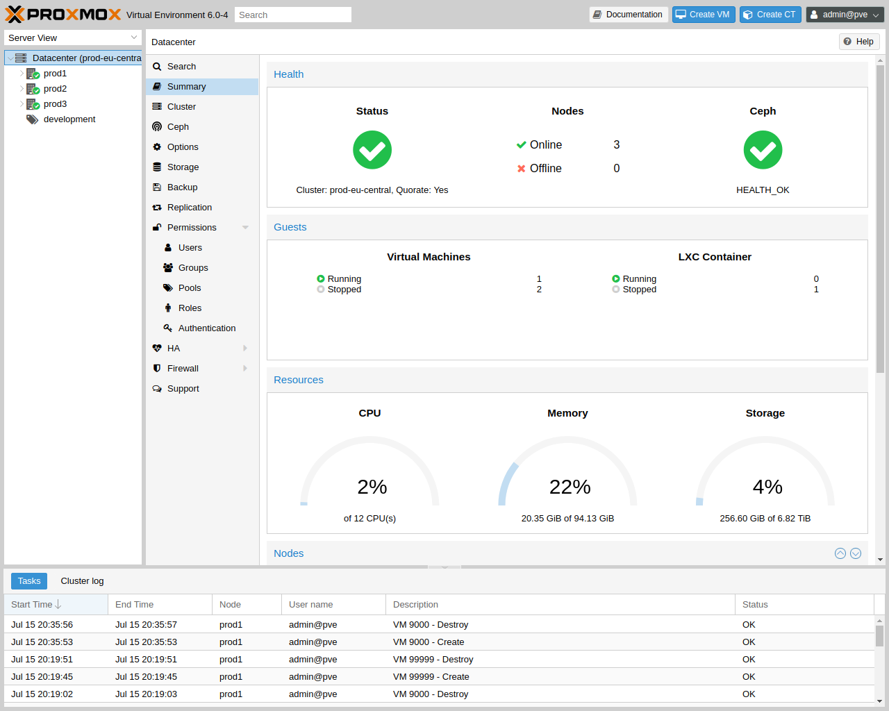
Proxmox VE 사용자 인터페이스는 네 가지 영역으로 구성됩니다.
헤더 : 상단에 있습니다. 상태 정보를 표시하고 가장 중요한 작업을 위한 버튼이 포함되어 있습니다.
리소스 트리 : 왼쪽에 있습니다. 특정 개체를 선택할 수 있는 탐색 트리입니다.
콘텐츠 패널 : 중앙 영역입니다. 선택한 객체는 여기에 구성 옵션과 상태를 표시합니다.
로그 패널 : 하단에 있습니다. 최근 작업에 대한 로그 항목을 표시합니다. : 해당 로그 항목을 두 번 클릭하여 자세한 내용을 보거나 실행 중인 작업을 중단할 수 있습니다.
리소스 트리 및 로그 패널의 크기를 축소 및 확장하거나 로그 패널을 완전히 숨길 수 있습니다.
이 기능은 작은 디스플레이에서 작업하면서 다른 콘텐츠를 볼 수 있는 공간이 더 필요할 때 유용할 수 있습니다.
4.3.1. 헤더#
왼쪽 상단에서 가장 먼저 보이는 것은 Proxmox 로고입니다. 그 옆에는 현재 실행 중인 Proxmox VE 버전이 표시됩니다. 옆에 있는 검색 창에서 특정 객체(VM, 컨테이너, 노드 등)를 검색할 수 있습니다. 리소스 트리에서 개체를 선택하는 것보다 더 빠른 경우도 있습니다.
헤더의 오른쪽 부분에는 4개의 버튼이 있습니다:
Documentation : 참고 문헌이 새 브라우저 화면으로 보여집니다.Create VM : 가상 머신 생성 마법사를 엽니다.Create CT : 컨테이너 생성 마법사를 엽니다.User Menu : 현재 로그인한 사용자의 ID를 표시하며, 이를 클릭하면 사용자별 옵션이 있는 메뉴가 열립니다. : 사용자 메뉴에는 로컬 UI 설정을 제공하는 My Settings가 있습니다. 그 아래에는 2단계 인증(TFA) 및 Password 셀프 서비스에 대한 바로 가기가 있습니다. 언어(Language) 및 테마(Color Theme)를 변경할 수 있는 옵션도 있습니다. : 마지막으로 메뉴 하단에는 로그아웃(Logout) 옵션이 있습니다.
4.3.2. My Settings#
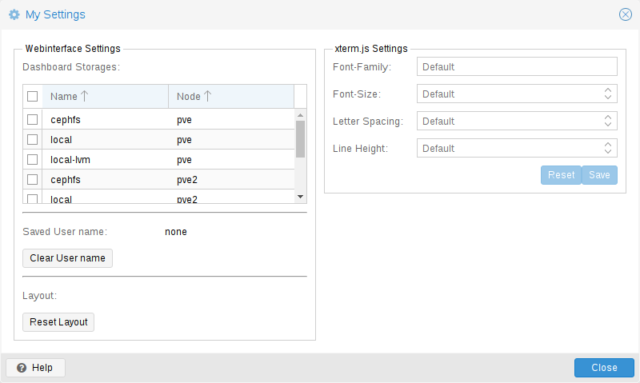
대시보드 설정 아래에는 저장된 사용자 이름과 이를 지우는 버튼, GUI의 모든 레이아웃을 기본값으로 재설정하는 버튼이 있습니다.
오른쪽에는
Font-Family : xterm.js에서 사용할 글꼴(예: Arial).Font-Size : 사용할 기본 글꼴 크기입니다.Letter Spacing : 텍스트에서 글자 간 간격을 늘리거나 줄입니다.Line Height : 줄의 절대 높이를 지정합니다.
4.3.3. 리소스 트리#
이것은 주요 탐색 트리입니다. 트리 위에서 미리 정의된 뷰를 선택할 수 있으며, 이는 아래 트리의 구조를 변경합니다. 기본 뷰는
Datacenter : 클러스터 전체 설정을 포함합니다(모든 노드에 해당).Node : 게스트가 실행되는 클러스터 내부의 호스트를 나타냅니다.Guest : VM, 컨테이너 및 템플릿.Storage : 데이터 스토리지.Pool : 관리를 간소화하기 위해 풀을 사용하여 게스트를 그룹화할 수 있습니다.
다음 뷰 유형을 사용할 수 있습니다:
Server View : 노드별로 그룹화된 모든 종류의 객체를 표시합니다.Folder View : 객체 유형별로 그룹화된 모든 종류의 객체를 표시합니다.Pool View : Pool별로 그룹화된 VM과 컨테이너를 표시합니다.Tag View : Tag별로 그룹화된 VM과 컨테이너를 표시합니다.
4.3.4. 로그 패널#
로그 패널의 주요 목적은 클러스터에서 현재 진행 중인 작업을 보여주는 것입니다. 새 VM을 만드는 것과 같은 작업은 백그라운드에서 실행되며, 이러한 것을 작업(
이러한 작업의 모든 출력은 별도의 로그 파일에 저장됩니다. 작업 로그 항목을 두 번 클릭하면 해당 로그를 볼 수 있습니다. 실행 중인 작업을 중단할 수도 있습니다.
모든 클러스터 노드의 가장 최근 작업을 여기에 표시합니다. 다른 사람이 다른 클러스터 노드에서 작업 중인지 실시간으로 확인할 수 있습니다.
로그 패널에서 오래되고 완료된 작업을 제거하여 목록을 짧게 유지합니다.
하지만Task History 의 노드 패널에서 해당 작업을 찾을 수 있습니다.
일부 단기 실행 작업은 모든 클러스터 멤버에게 로그를 전송합니다.
4.4. 콘텐츠 패널#
리소스 트리에서 항목을 선택하면 해당 개체가 콘텐츠 패널에 구성 및 상태 정보를 표시합니다. 다음 섹션에서는 이 기능에 대한 간략한 개요를 제공합니다. 더 자세한 정보를 얻으려면 참고 문헌의 해당 장을 참조하십시오.
4.4.1. 데이터센터(Datacenter)#
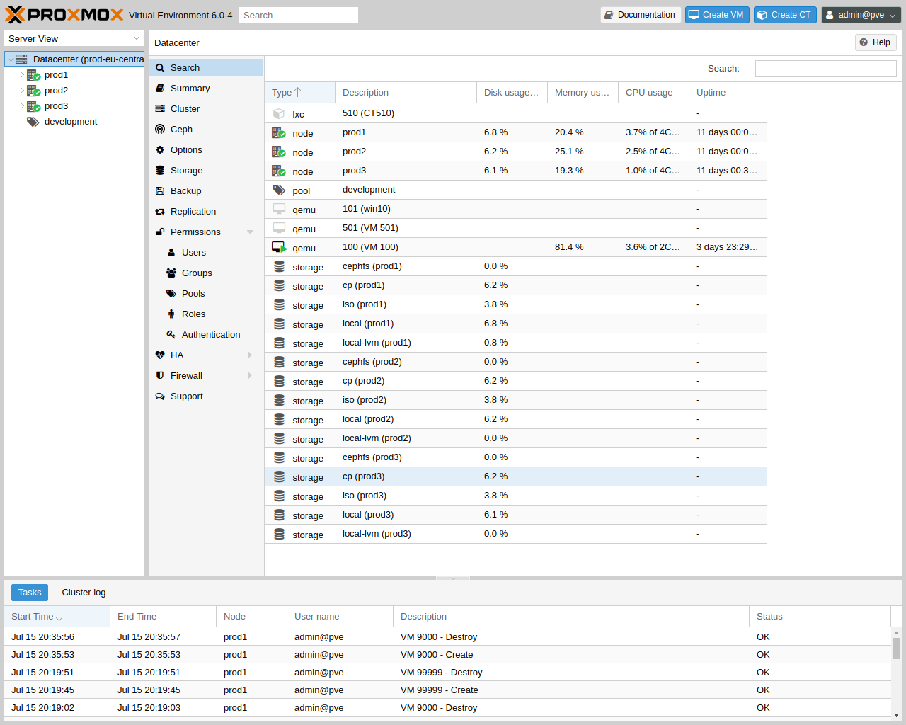
데이터센터 수준에서 클러스터 전체 설정 및 정보에 액세스할 수 있습니다.
Search : 노드, VM, 컨테이너, 스토리지 장치 및 풀에 대한 클러스터 전체 검색을 수행합니다.Summary : 클러스터의 상태 및 리소스 사용에 대한 간략한 개요를 제공합니다.Cluster : 클러스터를 만들거나 조인하는 데 필요한 기능과 정보를 제공합니다.Options : 클러스터 전체 기본 설정을 보고 관리합니다.Storage : 클러스터 스토리지를 관리하기 위한 인터페이스를 제공합니다.Backup : 백업 작업을 생성합니다. 이 기능은 클러스터 전체에서 작동하므로 클러스터의 VM/컨테이너가 어디에 있는지는 중요하지 않습니다.Replication : 복제 작업을 보고 관리합니다.Permissions : 사용자, 그룹 및 API 토큰 권한과 LDAP, MS-AD 및 2단계 인증을 관리합니다.HA : Proxmox VE 고가용성을 관리합니다.ACME : 서버 노드에 대한 ACME(Let’s Encrypt) 인증서를 설정합니다.Firewall : Proxmox 방화벽 클러스터 전체에 대한 템플릿을 구성하고 만듭니다.Metric Server : Proxmox VE에 대한 외부 메트릭 서버를 정의합니다.Notifications : Proxmox VE에 대한 알림 동작 및 대상을 구성합니다.Support : 지원 구독에 대한 정보를 표시합니다.
4.4.2. 노드(Nodes)#
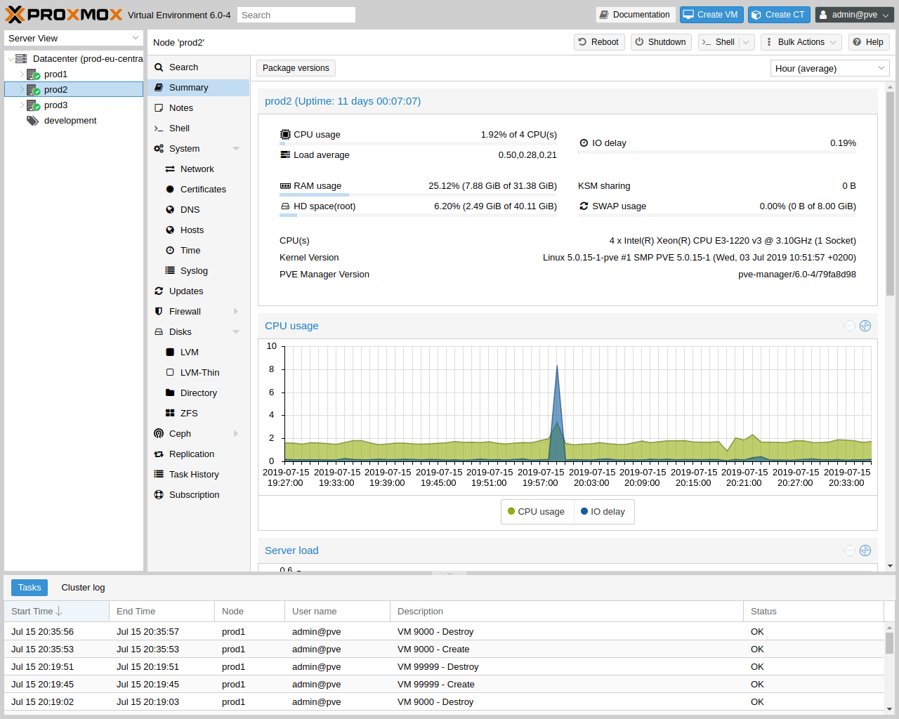
클러스터의 노드는 이 레벨에서 개별적으로 관리할 수 있습니다.
상단 헤더에는 재부팅(
Search : 노드에서 VM, 컨테이너, 스토리지 장치 및 풀을 검색합니다.Summary : 노드의 리소스 사용에 대한 간략한 개요를 표시합니다.Notes : 마크다운 구문으로 사용자 지정 주석을 작성합니다.Shell : 노드의 셸 인터페이스에 액세스합니다.System : 네트워크, DNS 및 시간 설정을 구성하고 syslog에 액세스합니다.Updates : 시스템을 업그레이드하고 사용 가능한 새 패키지를 확인합니다.Firewall : 특정 노드의 Proxmox 방화벽을 관리합니다.Disks : 연결된 디스크에 대한 개요를 얻고 사용 방법을 관리합니다.Ceph : 호스트에 Ceph 서버를 설치한 경우에만 사용됩니다. 이 경우 Ceph 클러스터를 관리하고 여기에서 상태를 확인할 수 있습니다.Replication : 복제 작업을 보고 관리합니다.Task History : 이전 작업 목록을 확인합니다.Subscription : 구독 키를 업로드하고 지원 사례에 사용할 시스템 보고서를 생성합니다.
4.4.3. 게스트(Guests)#
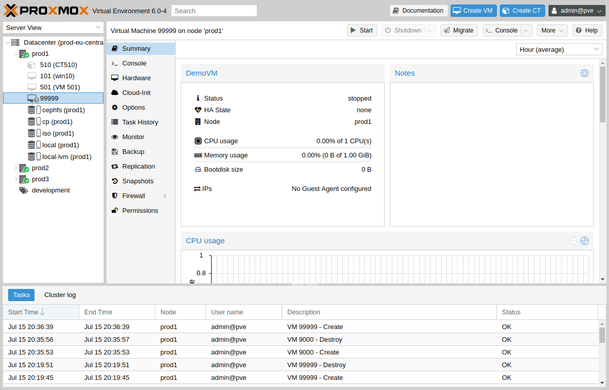
게스트에는 두 가지 종류가 있으며 둘 다 템플릿으로 변환할 수 있습니다. 하나는 커널 기반 가상 머신(KVM)이고 다른 하나는 Linux 컨테이너(LXC)입니다. 탐색 기능은 대부분 동일하며 일부 옵션만 다릅니다.
다양한 게스트 관리 인터페이스에 액세스하려면 왼쪽 메뉴에서 VM 또는 컨테이너를 선택합니다.
헤더에는 전원 관리, 마이그레이션, 콘솔 액세스 및 유형, 복제, HA 및 도움말과 같은 항목에 대한 명령이 포함되어 있습니다. 이러한 버튼 중 일부에는 드롭다운 메뉴가 포함되어 있습니다. 예를 들어, 종료(
오른쪽 패널에는 왼쪽 메뉴에서 선택한 항목에 대한 인터페이스가 포함되어 있습니다.
사용 가능한 인터페이스는 다음과 같습니다:
Summary : VM의 활동에 대한 간략한 개요와 마크다운 구문 주석을 위한 메모(Notes) 필드를 제공합니다.Console : VM/컨테이너의 대화형 콘솔에 액세스합니다.(KVM)Hardware : KVM VM에서 사용할 수 있는 하드웨어를 정의합니다.(LXC)Resources : LXC에서 사용할 수 있는 시스템 리소스를 정의합니다.(LXC)Network : 컨테이너의 네트워크 설정을 구성합니다.(LXC)DNS : 컨테이너의 DNS 설정을 구성합니다.Options : 게스트 옵션을 관리합니다.Task History : 선택한 게스트와 관련된 모든 이전 작업을 봅니다.(KVM) Monitor : KVM 프로세스에 대한 대화형 통신 인터페이스입니다.Backup : 시스템 백업을 만들고 복원합니다.Replication : 선택한 게스트의 복제 작업을 보고 관리합니다.Snapshots : VM 스냅샷을 만들고 복원합니다.Firewall : VM 수준에서 방화벽을 구성합니다.Permissions : 선택한 게스트의 권한을 관리합니다.
4.4.4. 스토리지(Storage)#
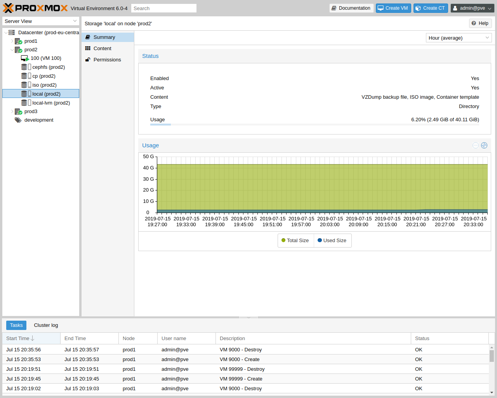
게스트 인터페이스와 마찬가지로 스토리지 인터페이스는 특정 스토리지에 대한 왼쪽 메뉴와 이러한 요소를 관리하는 오른쪽 인터페이스로 구성됩니다.
이 보기에는 두 개의 파티션 분할 보기가 있습니다. 왼쪽에는 스토리지 옵션이 있고 오른쪽에는 선택한 옵션의 콘텐츠가 표시됩니다.
Summary : 유형, 사용 및 저장하는 콘텐츠와 같은 저장소에 대한 중요한 정보를 표시합니다.Content : 저장소가 저장하는 각 콘텐츠 유형에 대한 메뉴 항목(예: 백업, ISO 이미지, CT 템플릿).Permissions : 저장소에 대한 권한을 관리합니다.
4.4.5. 풀(Pools)#
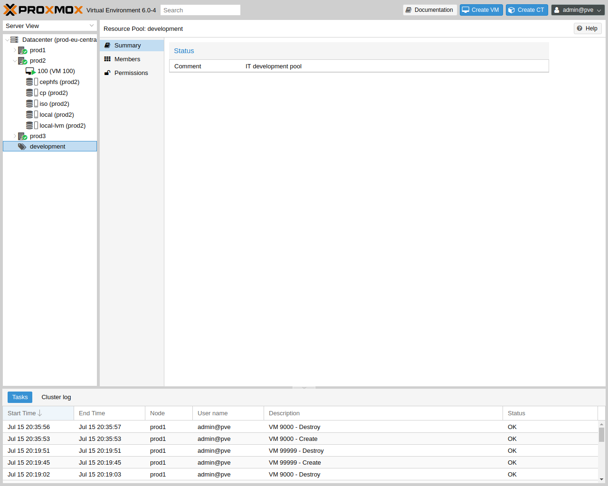
다시 말해서, 풀 뷰는 두 개의 파티션으로 구성됩니다. 왼쪽에 메뉴가 있고 오른쪽에 각 메뉴 항목에 해당하는 인터페이스가 있습니다.
Summary : 풀에 대한 설명을 보여줍니다.Members : 풀 멤버(게스트 및 스토리지)를 표시하고 관리합니다.Permissions : 풀에 대한 권한을 관리합니다.
4.5. 태그#
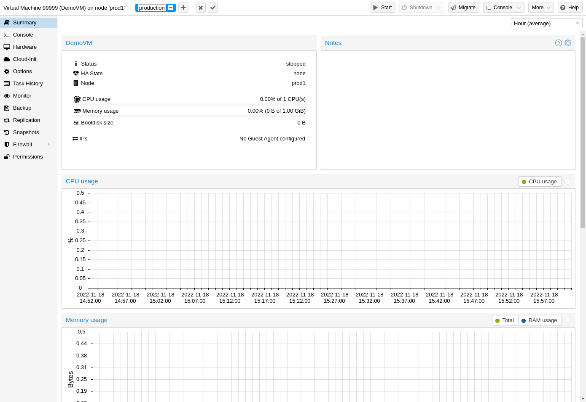
조직적 목적으로 게스트에 대한 태그(
게스트의 상태 줄에서 + 버튼을 눌러 여러 태그를 추가하고 - 버튼을 눌러 제거할 수 있습니다. 변경 사항을 저장하거나 취소하려면 각각 ✓ 및 x 버튼을 사용할 수 있습니다.
CLI를 통해 태그를 설정할 수도 있으며, 여기서 여러 태그는 세미콜론(;)으로 구분됩니다. 예를 들어:
# qm set ID --tags myfirsttag;mysecondtag
4.5.1. 스타일 구성#
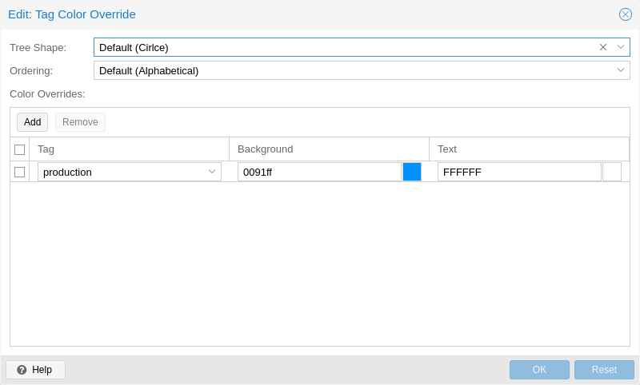
기본적으로 태그 색상은 결정적 방식으로 텍스트에서 파생됩니다. 색상, 리소스 트리의 모양, 대소문자 구분, 태그 정렬 방법은 커스텀할 수 있습니다. 이는
# pvesh set /cluster/options --tag-style color-map=example:000000:FFFFFF
위 태그 예제의 배경색을 검정색(#000000)으로, 텍스트 색상을 흰색(#FFFFFF)으로 설정합니다.
4.5.2. 권한#
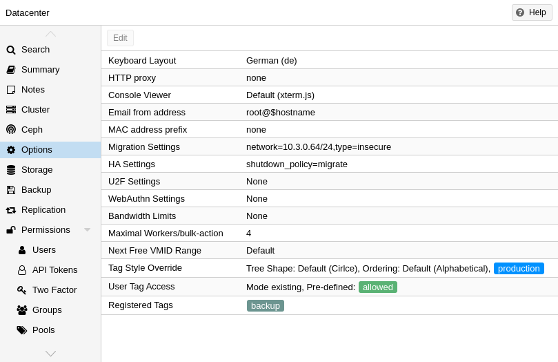
기본적으로 게스트(/vms/ID)에서
free : 사용자는 태그 설정에 제한이 없습니다(기본값)list : 사용자는 미리 정의된 태그 목록에 따라 태그를 설정할 수 있습니다.existing : list와 비슷하지만 사용자는 기존 태그도 사용할 수 있습니다.none : 사용자는 태그 사용이 제한됩니다.
CLI를 통해서도 동일한 작업을 수행할 수 있습니다.
정확한 옵션에 대한 자세한 내용과 CLI에서 이를 호출하는 방법은 데이터 센터 구성을 참조하세요.